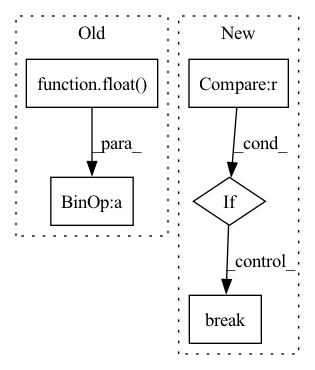

Pattern ID :38049

Before Change
sm=softmax(out[i])
pts.append((sm[1].item(), j[-1][i].item()))
valloss=totalloss/totals
acc = float(correct)/totals
print("Epoch "+str(epoch)+" valid loss: "+str(valloss)+" acc: "+str(acc))
if auprc:
print("AUPRC: "+str(AUPRC(pts)))
After Change
torch.save(model,save)
else:
patience += 1
if early_stop and patience > 20:
break
scheduler.step()
In pattern: SUPERPATTERN
Frequency: 3
Non-data size: 5
Instances
Fragment ID: 109077243
Project Name: pliang279/multibench
Commit Name: 62bf78b72dde077b9febf7fe1cc3e50c936fbcbb
Time: 2021-04-26
Author: ztwu_nil@zju.edu.cn
File Name: training_structures/Contrastive_Learning.py
M Class Name: AnonimousClass
N Class Name: AnonimousClass
M Method Name: train(14)
N Method Name: train(14)
M Parent Class:
N Parent Class:
M File Name: training_structures/Contrastive_Learning.py
N File Name: training_structures/Contrastive_Learning.py
M Start Line: 99
M End Line: 161
N Start Line: 99
N End Line: 157
'>
Before Change
sm=softmax(out[i])
pts.append((sm[1].item(), j[-1][i].item()))
valloss=totalloss/totals
acc = float(correct)/totals
print("Epoch "+str(epoch)+" valid loss: "+str(valloss)+" acc: "+str(acc))
if auprc:
print("AUPRC: "+str(AUPRC(pts)))
if acc>bestvalacc:
After Change
torch.save(model,save)
else:
patience += 1
if early_stop and patience > 20:
break
scheduler.step()
'>
Fragment ID: 109077245
Project Name: pliang279/multibench
Commit Name: 0566c062ada67f67199bb5b63046fab1fd680654
Time: 2021-04-26
Author: ztwu_nil@zju.edu.cn
File Name: training_structures/Contrastive_Learning.py
M Class Name: AnonimousClass
N Class Name: AnonimousClass
M Method Name: train(14)
N Method Name: train(14)
M Parent Class:
N Parent Class:
M File Name: training_structures/Contrastive_Learning.py
N File Name: training_structures/Contrastive_Learning.py
M Start Line: 99
M End Line: 161
N Start Line: 99
N End Line: 157
'>
Before Change
def show_pos_emb(self, rows=1, base_size=2):
import matplotlib.pyplot as plt
hh = ww = int(tf.math.sqrt(float(self.relative_position_bias_table.shape[0] - self.cls_token_pos_len)))
ss = tf.reshape(self.relative_position_bias_table[: hh * ww], (hh, ww, -1)).numpy()
cols = int(tf.math.ceil(ss.shape[-1] / rows))
fig, axes = plt.subplots(rows, cols, figsize=(base_size * cols, base_size * rows))
for id, ax in enumerate(axes.flatten()):
After Change
cols = int(tf.math.ceil(num_heads / rows))
fig, axes = plt.subplots(rows, cols, figsize=(base_size * cols, base_size * rows))
for id, ax in enumerate(axes.flatten()):
if id >= num_heads:
break
ax.imshow(pos_emb[id])
ax.set_axis_off()
fig.tight_layout()
return fig
'>
Fragment ID: 109077247
Project Name: leondgarse/keras_cv_attention_models
Commit Name: 243a634397fcf2383d6d6dcca476dfdc240d0213
Time: 2022-10-27
Author: leondgarse@gmail.com
File Name: keras_cv_attention_models/beit/beit.py
M Class Name: MultiHeadRelativePositionalEmbedding
N Class Name: MultiHeadRelativePositionalEmbedding
M Method Name: show_pos_emb(3)
N Method Name: show_pos_emb(3)
M Parent Class: keras.layers.Layer
N Parent Class: keras.layers.Layer
M File Name: keras_cv_attention_models/beit/beit.py
N File Name: keras_cv_attention_models/beit/beit.py
M Start Line: 115
M End Line: 120
N Start Line: 115
N End Line: 124